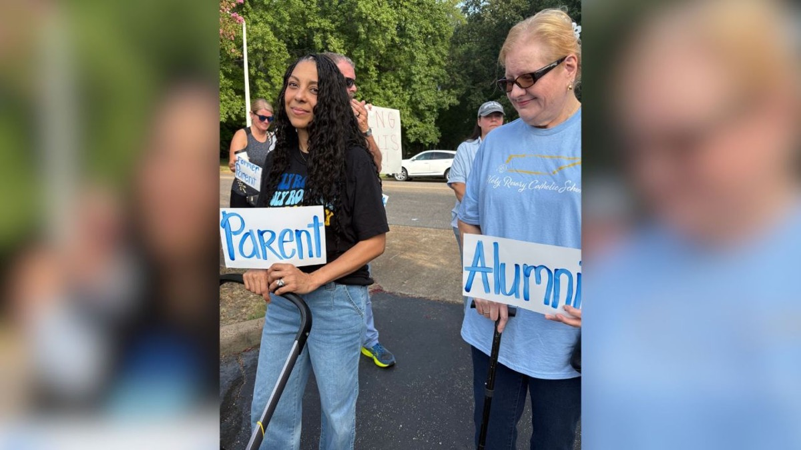
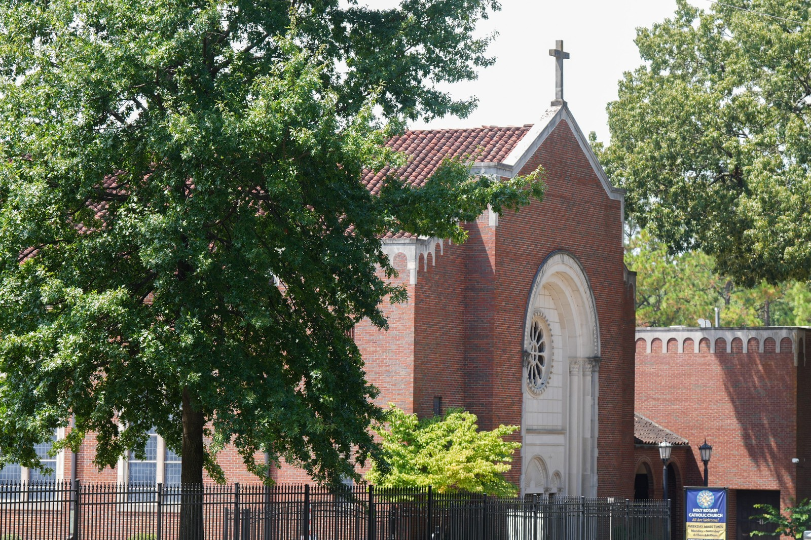
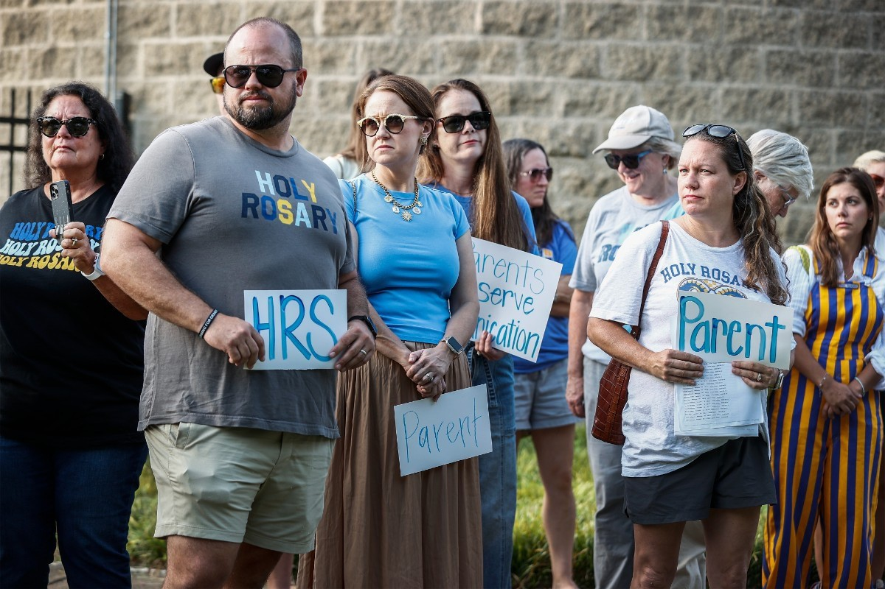

Since 2003
Named principal in 2003
Twenty-three years in the job. He did not come from outside — he had already walked these halls as a student.
Rams Fight Back — standing with Principal Darren Mullis, asking the pastor and the Bishop of Memphis to restore him.
Get involved
Sign, call, and share — until Darren Mullis is restored as principal of Holy Rosary Catholic School.
Darren Mullis has been principal since 2003. Families know what he built here.
Since 2003
Twenty-three years in the job. He did not come from outside — he had already walked these halls as a student.
Roots
Holy Rosary, first through eighth grade. Christian Brothers, class of 1986. He returned as youth director, then director of religious education, then teacher. Master's from Memphis Theological Seminary. Leadership Academy through the diocese.
The school today
Families from East Memphis and across West Tennessee. A parish school on Park Avenue since 1954.
Programs
Twelve sports. Spanish, French, and Latin. Extended day and summer programs. The Learning Center and the ANGEL Program for students who need extra support.
How he led
He wrote to parents each week. He helped start middle school youth ministry. When something new was proposed, he asked whether it served all of God's children and followed the example of Jesus Christ.
Parents who signed the petition call him a familiar face — someone their children knew by name. Sign if that matches what you saw →
Fight alongside the Rams
We respectfully request that Darren Mullis be restored. Until that is done, we stand with him — as Rams, as families, as the faithful who know this school.
Sign the petitionText a Ram · post the link
Keep signing and sharing. An anonymous alum’s $1 million capital gift — in Darren’s honor, with naming rights to explore — has been offered to Holy Rosary after the signature match was met.
Text a Ram


Official statement issued to Memphis media on August 25, 2026.
Families protested Aug. 21 after a departure letter offered no public explanation. The document sent to reporters with the campaign PDF.


These are the public offices that govern this parish school. We name the office. We ask, with reverence, that Darren Mullis be restored.
Pastor of Holy Rosary · chancellor · judicial vicar
Call 901-767-6949President / CEO · Superintendent, Catholic Schools of Memphis
Call 901-373-1221The public record
19 Aug 2026 — Parents were told Darren Mullis “will be departing” as principal of Holy Rosary Catholic School. No public cause was given. He has held the office since 2003.
Independent of the parish and the diocese. In communion with the Holy Father. Canon 212 §3.
For journalists
Independent petition of the Christian faithful — not the parish, not the diocese. Tell us who you are and what you need. We’ll follow up as we’re able.